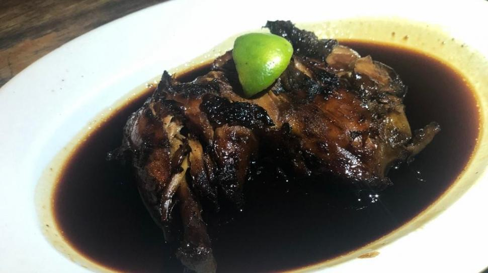
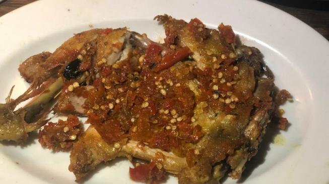
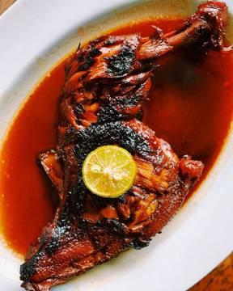

Detail Wisata Kuliner Kota Depok
Gallery Foto




AYAM BAKAR CHRISTINA✩ ✩ ✩ ✩
Rumah makan Ayam Bakar Christina berada tepat di pinggir Jalan Margonda Raya No.420, Pondok Cina, Beji, Kota Depok.
Menu yang menjadi andalan tentu saja ayam bakar. Bagian ayam yang dijual ada dalam dua pilihan yaitu dada dan paha.
Untuk harga, satu porsi menu ayam di rumah makan tersebut dibanderol dengan harga Rp 15 ribu. Menu yang disediakan yaitu ayam bakar,
ayam penyet, ayam goreng, ikan bakar, pepes tahu, serta pepes jamur.
Alamat Dan Peta Lokasi
Jl. Margonda Raya No.420, Pondok Cina, Kecamatan Beji, Kota Depok, Jawa Barat 16424
Testimony Dan Komentar
Nike Ardila
Tempat favorit jika mampir ke Bogor-Depok.
Cinta Kuya
Harganya relatif murah. keluarga juga senang jika ke sana.
Jefri Nichol
Pernah ke sini bareng teman-teman.